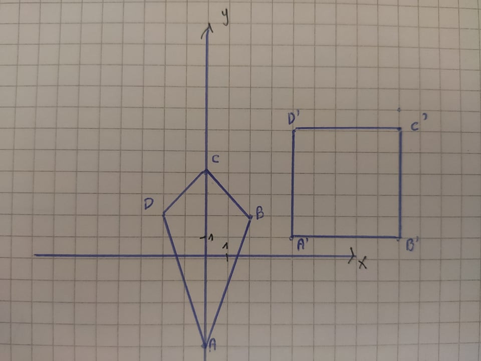
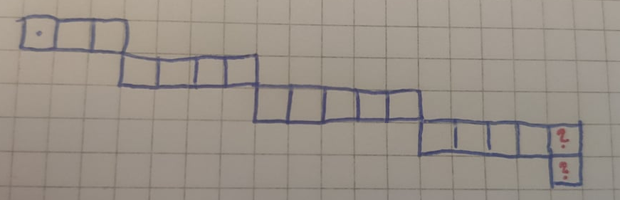
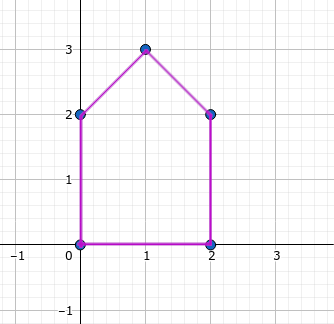
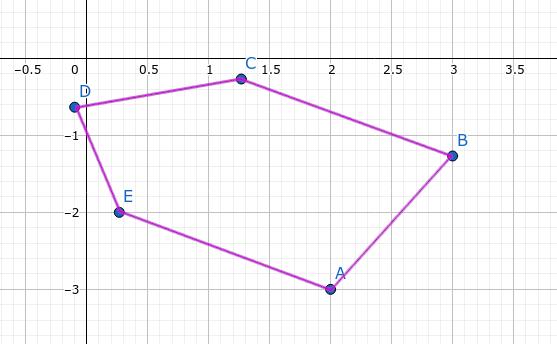
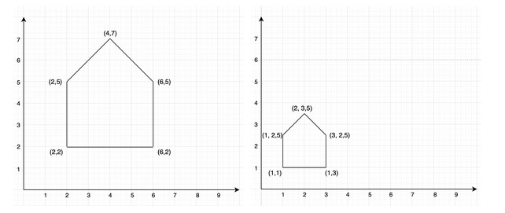
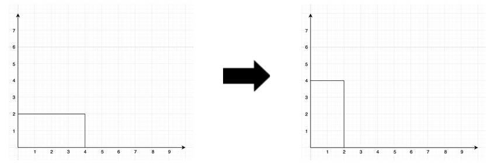

Grafika komputerowa (wykłady, semester 1)
Prowadzący: prof. dr hab. inż. Ryszard Choraś
Pytania z kolokwium na zaliczenie
Termin 0 (tryb stacjonarny, styczeń 2022 roku)
Pytania:
-
Zadanie 1:
Wyznacz macierz transformacji geometrycznej 2D, która przekonwertuje deltoid dany punktami
A(0, -4) B(2, 2) C(0, 4) D(-2, 2)
do postaci kwadratu danego punktami
A`(4,1) B`(9, 1) C`(9,6) D`(4,6)
 -
Zadanie 2:
Zapisz macierz projekcji perspektywicznej dla obserwatora stojącego w punkcie (0, 0, -d) o rzutni z=0. -
Zadanie 3:
Który piksel zostanie narysowany jako następny?
 -
Zadanie 4a:
Jaką operację reprezentuje poniższa macierz? \begin{bmatrix} 0.5 & -0.866 & 0 & 2 \\ 0.866 & 0.5 & 0 & -3 \\ 0 & 0 & 1 & 0 \\ 0 & 0 & 0 & 1 \\ \end{bmatrix} -
Zadanie 4b:
Nałóż macierz z Zadania 4a na poniższy domek i narysuj wynik.
 -
Zadanie 4c:
Wyprowadź macierz transformacji geometrycznej w przestrzeni 3D.
Macierz ma wykonywać obrót o 30 stopni wokół osi X z ustalonym punktem (3, 5, 12, 1).
Odpowiedzi:
-
Zadanie 1:
Nie mam pojęcia, w jaki sposób uzyskać taki efekt pojedynczą macierzą. Poniżej znajduje się propozycja jak rozwiązać to zadanie korzystając z dwóch macierzy:
Przesuwamy punkt A o 4 jednostki w górę. Wykonujemy więc taką translację wyłącznie na punkcie A: \begin{bmatrix} 1 & 0 & 0 \\ 0 & 1 & 4 \\ 0 & 0 & 1 \\ \end{bmatrix} Punkt A zostaje przeniesiony do punktu (0, 0). Powstaje kwadrat, na który należy nałożyć trzy transformacje geometryczne (w podanej kolejności):- Obrócić o 45 stopni, zgodnie z ruchem wskazówek zegara
- Zeskalować przy użyciu skali \(\frac{5}{4} \sqrt{2}\)
- Dokonać przesunięcia o wektor \((4, 1)\)
-
Zadanie 2:
Jest szansa, że chodzi o taką macierz:
\begin{bmatrix} 1 & 0 & 0 & 0 \\ 0 & 1 & 0 & 0 \\ 0 & 0 & 0 & 0 \\ 0 & 0 & (1/d) & 0 \\ \end{bmatrix} Ale w sumie nie wiadomo, bo w Foleyu jest napisane, że jest to macierz o rzutni z=d, a nie z=0.
-
Zadanie 3:
Nie mam pojęcia w jaki sposób obliczyć to Bresenhamem. -
Zadanie 4a:
Jest to macierz transformacji 3D. Widzimy tutaj złożenie dwóch transformacji:- Obrót o 60 stopni wokół osi Z
- Przesunięcie o wektor (2, -3, 0)
-
Zadanie 4b:
Najpierw układamy macierz współrzędnych tego domku. Ponieważ macierz z poprzedniego zadania jest macierzą 3D, a nasz domek jest dwuwymiarowy, to jako współrzędną Z przyjmiemy wartość 0. \begin{bmatrix} 0 & 2 & 2 & 1 & 0 \\ 0 & 0 & 2 & 3 & 2 \\ 0 & 0 & 0 & 0 & 0 \\ 1 & 1 & 1 & 1 & 1 \\ \end{bmatrix} Następnie "nakładamy" transformację na współrzędne, wykonując mnożenie macierzy. \[ \begin{bmatrix} 0.5 & -0.866 & 0 & 2 \\ 0.866 & 0.5 & 0 & -3 \\ 0 & 0 & 1 & 0 \\ 0 & 0 & 0 & 1 \\ \end{bmatrix} \cdot \begin{bmatrix} 0 & 2 & 2 & 1 & 0 \\ 0 & 0 & 2 & 3 & 2 \\ 0 & 0 & 0 & 0 & 0 \\ 1 & 1 & 1 & 1 & 1 \\ \end{bmatrix} = \begin{bmatrix} 2 & 3 & 1.268 & -0.098 & 0.268 \\ -3 & -1.268 & -0.268 & -0.634 & -2 \\ 0 & 0 & 0 & 0 & 0 \\ 1 & 1 & 1 & 1 & 1 \\ \end{bmatrix} \] Na końcu rysujemy obrazek, który składa się z takich punktów, jakie wyszły po przemnożeniu macierzy (czyli (2, -3), (3, -1.268) i tak dalej)
 -
Zadanie 4c:
Jest to proste zadanie na składanie macierzy przekształceń.
Należy wykonać takie mnożenie macierzowe:
\[ \begin{bmatrix} 1 & 0 & 0 & 3 \\ 0 & 1 & 0 & 5 \\ 0 & 0 & 1 & 12 \\ 0 & 0 & 0 & 1 \\ \end{bmatrix} \cdot \begin{bmatrix} 1 & 0 & 0 & 0 \\ 0 & cos(30 ^{\circ}) & -sin(30 ^{\circ}) & 0 \\ 0 & sin(30 ^{\circ}) & cos(30 ^{\circ}) & 0 \\ 0 & 0 & 0 & 1 \\ \end{bmatrix} \cdot \begin{bmatrix} 1 & 0 & 0 & -3 \\ 0 & 1 & 0 & -5 \\ 0 & 0 & 1 & -12 \\ 0 & 0 & 0 & 1 \\ \end{bmatrix} \] Po wykonaniu mnożenia oraz podstawieniu wartości funkcji trygonometrycznych powinna wyjść taka macierz. Jest to rozwiązanie naszego zadania. \[ \begin{bmatrix} 1 & 0 & 0 & 0 \\ 0 & \frac{\sqrt{3}}{2} & -\frac{1}{2} & 11 - \frac{1}{2} (5 \sqrt{3}) \\ 0 & \frac{1}{2} & \frac{\sqrt{3}}{2} & \frac{19}{2} - 6 \sqrt{3} \\ 0 & 0 & 0 & 1 \\ \end{bmatrix} \]
Termin 0 (tryb zaoczny, styczeń 2022 roku)
Pytania:
-
Zadanie 1:
Wykorzystując Algorytm Bresenhama dokonaj konwersji punktu o współrzędnych (2,8) do (13,18). -
Zadanie 2:
Na podstawie poniższych ilustracji określ typ przekształcenia i zapisz jego macierz.
 -
Zadanie 3:
Podaj macierz tego przekształcenia.

Odpowiedzi:
-
Zadanie 1:
\(start = [2; 8]\)
\(stop = [13; 18]\)
\(dx = 13-2 = 11\)
\(dy = 18 - 8 = 10\)
\(m = \frac{10}{11}\)
Ciąg dalszy: patrz zakładka "Bresenham Generator" na samej górze tego dokumentu.
-
Zadanie 2:
Jest to bardzo prosta macierz skalowania o skali \(\frac{1}{2}\).
\begin{bmatrix} \frac{1}{2} & 0 & 1 \\ 0 & \frac{1}{2} & 0 \\ 0 & 0 & 1 \\ \end{bmatrix} -
Zadanie 3:
Podam dwie przykładowe macierze, chociaż pewnie jest ich więcej:
Skalowanie \(x \rightarrow \frac{1}{2}\), \(y \rightarrow 2\) \begin{bmatrix} \frac{1}{2} & 0 & 0 \\ 0 & 2 & 0 \\ 0 & 0 & 1 \\ \end{bmatrix} Obrót o 90 stopni i odbicie względem osi Y. \[ \begin{bmatrix} -1 & 0 & 0 \\ 0 & 1 & 0 \\ 0 & 0 & 1 \\ \end{bmatrix} \cdot \begin{bmatrix} cos(90°) & -sin(90°) & 0 \\ sin(90°) & cos(90°) & 0 \\ 0 & 0 & 1 \\ \end{bmatrix} = \begin{bmatrix} 0 & 1 & 0 \\ 1 & 0 & 0 \\ 0 & 0 & 1 \\ \end{bmatrix} \]